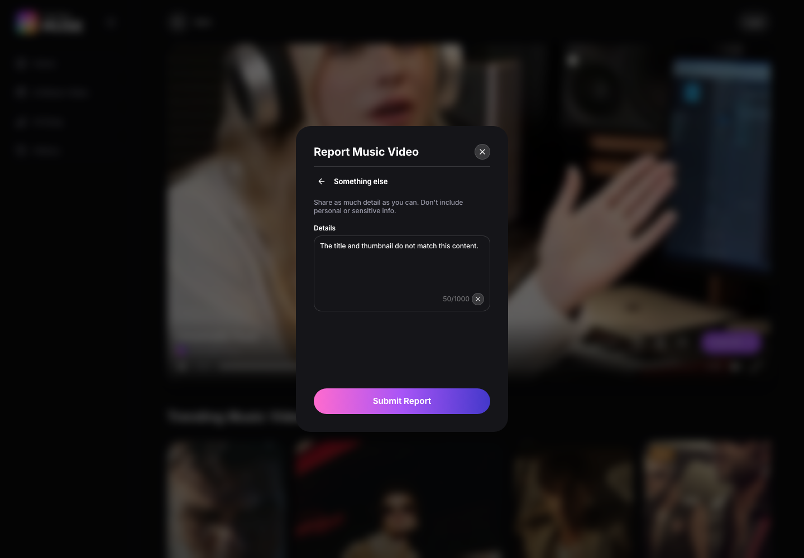
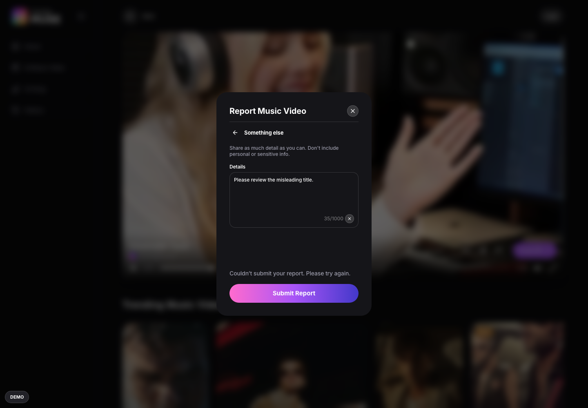
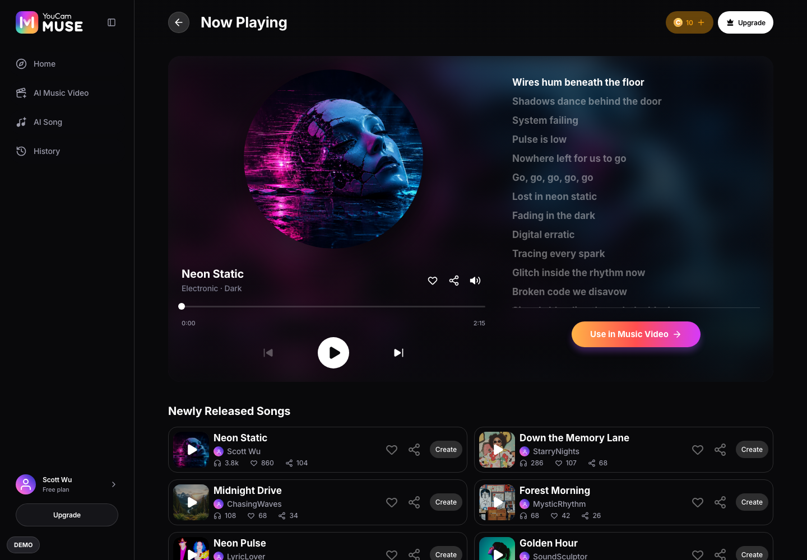
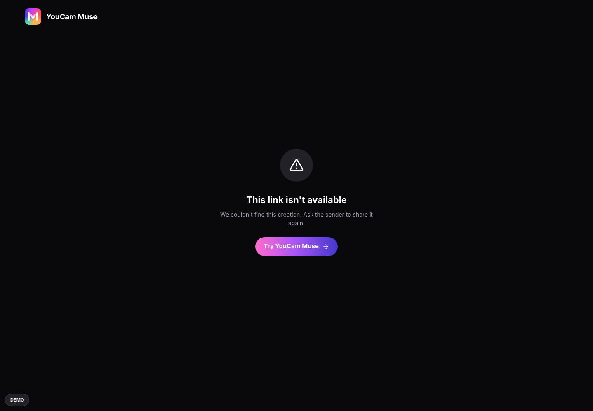
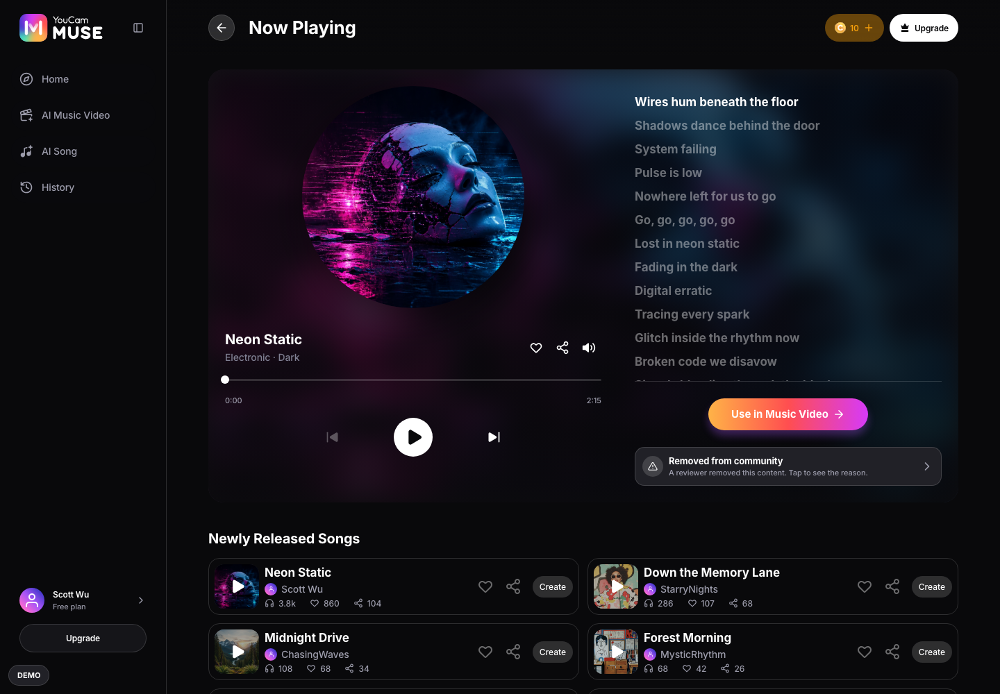
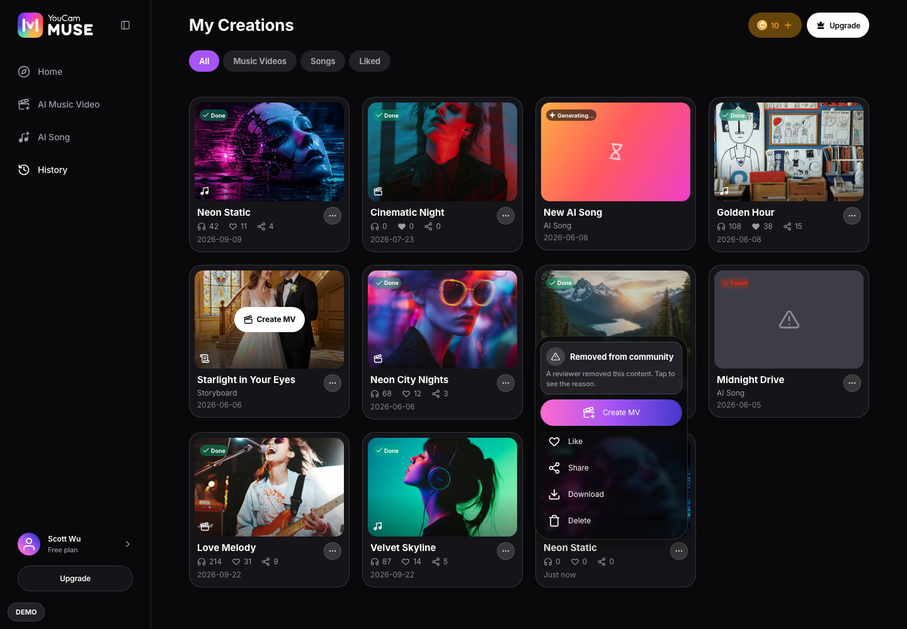
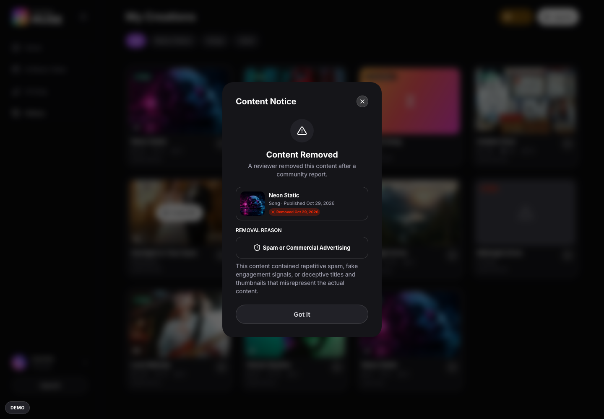
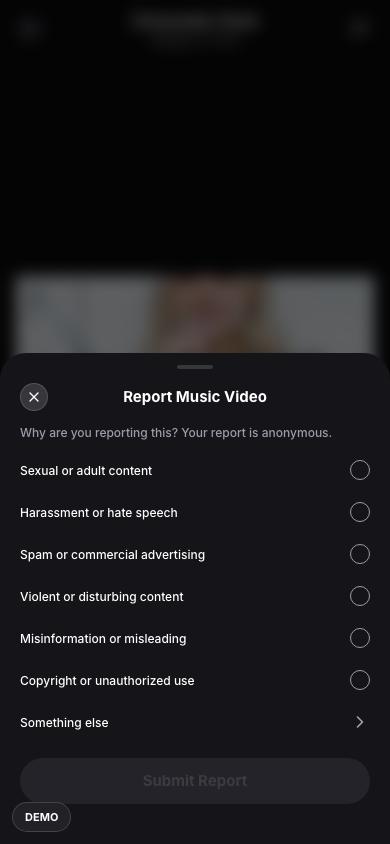
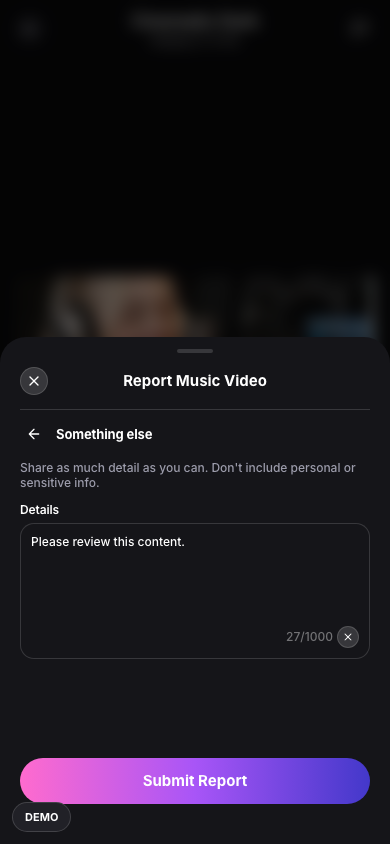

Content Report
Report a song or music video with a built-in reason or an explanation. Reviewers can remove public access while the creator keeps private playback.
| Scope | MV and Song players, community Song Result, public Share, History and owner Result |
| Audience | Web RD and QA |
| Source | Content Report PRD v1.1 plus product-owner decisions of 28–29 October 2026 |
| Capture | Live production app: desktop 1440 × 1000; phone supplement 390 × 844 |
↓ Flow Diagram — full user journey (click to expand)
| ID | Path | Entry point | Steps | Outcome |
|---|---|---|---|---|
| P1 | Choose a reason and submit | Report flag or public Share menu | 4 steps | Success remains until dismissed |
| P2 | Duplicate and session limit | Report an already reported item or a sixth different item | 2 steps | Feedback without opening the dialog |
| P3 | Failure and retry | Submission fails | 2 steps | Retry succeeds |
| P4 | Own content is not reportable | Signed-in creator opens their own content | 1 steps | No Report entry |
| P5 | Reviewer removal and private access | Reviewer removes a reported item | 4 steps | Public access unavailable; owner retains private playback |
| P6 | Phone presentation supplement | Report on a phone | 3 steps | Bottom sheet and manual confirmation |
Visitors and signed-in users follow the same flow for other people's and official content.
- P1-S1 Presses Report on a music video.
- P1-S2 Selects one built-in reason.
- P1-S3 Selects Something else and enters Details.
- P1-S4 Presses Submit Report.
- 1Next action
- Report Music Video
- Something else
- Submit Report
- No sign-in is required.
- The title is Report Music Video for an MV and Report Song for a song.
- Submit Report is always visible and disabled until the input is valid.
- The six built-in reasons appear in the order shown.
- 1Next action
- Only one built-in reason can be selected.

- 1Next action
- Details
- Details accepts at most 1000 characters.
- Whitespace-only input cannot be submitted.
- Back and re-entry retain the draft; Clear empties it; closing the dialog resets it.
- 1Next action
- Thank you for keeping Muse safe
- Done
- Disable submission while it is in progress.
- Only successful submissions count and mark the content as reported.
- Do not automatically close the success state after three seconds.
- Done dismisses it; existing Close, Escape and backdrop dismissal remain available.
- A successful report never removes or hides the content.
Exactly two controls prevent repeated or excessive reports in one document lifetime.
- P2-S1 Presses Report on content already successfully reported in this session.
- P2-S2 Successfully reports five items, then presses Report on a sixth different item.
- You already reported this content.
- Duplicate feedback wins even when the five-report cap is also reached.
- Song and MV keys are distinct even when their IDs match.
- You have reached the report limit for this session.
- MV and Song share five successful submissions; the fifth is allowed.
- Cancelled and failed attempts do not count.
- Client navigation and sign-in changes preserve the session; refresh or a new document resets it.
- Both guard toasts last three seconds and hold on hover or focus; leaving restarts three seconds.
- Phone toasts sit above the tab bar.
The user can recover without losing the report draft.
- P3-S1 Submits while the submission service fails.
- P3-S2 Presses Submit Report again after the failure is resolved.

- 1Next action
- Couldn’t submit your report. Please try again.
- Do not count a failure or mark the item as reported.
- Keep the report open and retain its input.
- Submitting disables repeated clicks.
- 1Next action
- The user retries explicitly; no automatic retry or automatic removal.
Official content remains reportable; ownership is based on the signed-in account.
- P4-S1 Opens their own song result while signed in.

- Reject attempted self-report submissions as well as hiding the entry.
- Visitors can report public content; after sign-in evaluate ownership against the account.
- The reported creator is not shown the reporter's identity.
- Reporter identification or logging is defined by RD, separately from this anonymity promise.
Reviewer decisions change public visibility, not creator ownership.
- P5-S1 Opens a public Share link after reviewer removal.
- P5-S2 The signed-in creator opens their own Result after removal.
- P5-S3 Opens the removed item's more menu in History.
- P5-S4 Presses the removal notice.

- This link isn't available
- Remove the item from Home, Explore and public creator profiles.
- Public Share and player links are unavailable even to the signed-in owner.
- Do not mount playable audio or video in unavailable views.

- 1Next action
- Only the signed-in creator can use this private access.
- Normal and permanent removal have the same access rules.
- Signing out revokes private playback.

- 1Next action
- Removed from community
- A reviewer removed this content. Tap to see the reason.
- Keep the History list item visually normal: no badge, grey thumbnail or status label.

- 1Next action
- Content Notice
- Got It
- Keep Content Removed and Permanently Removed variants.
- Retain publication and removal information, the category chip and existing reason explanations.
- Got It dismisses the notice; no resubmission instructions or eligibility details.
The same decisions apply in the existing phone layout.
- P6-S1 Presses the report flag in the phone player.
- P6-S2 Chooses Something else.
- P6-S3 Submits a valid report.

- 1Next action
- The title follows the media kind.

- 1Next action
- The 1000-character and nonempty rules are unchanged.
- 1Next action
- Done
- No three-second auto-dismissal.
Undecided, and blocking something. Everything settled lives beside the rule it governs, not here.
| ID | Question | Blocks | Owner |
|---|---|---|---|
| Q-01 | RD report and moderation integration | Provide endpoint, reason IDs, identity/session, idempotency, reviewer state and authorization contract. Product behavior is settled. | RD |
Every acceptance criterion in plan.md and where this spec defines it — 15 of 15 map to a step. Write the test cases in your test tool; this table is the trace back to the spec.
| Criterion | What it asserts | Specified in |
|---|---|---|
| AC-RPT-01 | Guest reporting opens the correct media title without requiring sign-in. | P1-S1 · P6-S1 |
| AC-RPT-02 | Six ordered reasons and Something else follow selection, Details validation and draft-retention rules. | P1-S1 · P1-S2 · P1-S3 · P6-S2 |
| AC-RPT-03 | Submit stays visible, disabled until valid and while sending. | P1-S1 · P1-S2 · P3-S1 |
| AC-RPT-04 | Success has Done and never closes automatically after three seconds. | P1-S4 · P6-S3 |
| AC-RPT-05 | Reporting success does not hide or remove content. | P1-S4 |
| AC-RPT-06 | Only successful submissions count toward five across songs and MVs. | P2-S2 · P3-S1 |
| AC-RPT-07 | Duplicate feedback takes priority over the cap and is checked before submission. | P2-S1 · P2-S2 |
| AC-RPT-08 | Guard toasts last three seconds with hover and focus hold. | P2-S1 · P2-S2 |
| AC-RPT-09 | Reviewer removal blocks public access while retaining signed-in owner private playback. | P5-S1 · P5-S2 |
| AC-RPT-10 | History keeps its normal list appearance, with a menu notice and no Publish. | P5-S3 |
| AC-RPT-11 | The existing notice variants and reason explanations remain, with Got It and no resubmission. | P5-S4 |
| AC-RPT-12 | Reporting is anonymous to creators and separate from the customer-support issue category. | P4-S1 |
| AC-RPT-13 | Self-report is hidden and blocked after sign-in; official content stays reportable. | P4-S1 |
| AC-RPT-14 | Failure retains the draft, counts nothing and allows explicit retry. | P3-S1 · P3-S2 |
| AC-RPT-15 | QA failure and reviewer state are session-only, resettable and do not mutate fixed content. | P3-S1 · P5-S1 · P5-S2 |
Where the prototype fakes or stubs behaviour. Build the production must do column — never the prototype behaviour.
| Area | Prototype does | Production must do |
|---|---|---|
| Report service | Local success simulation and a session-only QA failure control. | RD supplies endpoint, reason IDs, payload, identity/session and idempotent retry protocol. |
| Moderation | QA selects an item, one of six reasons and removal type; state updates in the current document and resets on refresh. Fixed removed examples remain. | Persist reviewer decisions, enforce public/private authorization and synchronize across devices. |
| Account identity | One mock account uses stable fixture attribution and local History ownership. | Use immutable account and owner IDs; never display names as authorization. |
| ID | Question | Decision |
|---|---|---|
| D-01 | Six reasons only? | Keep six built-in reasons plus Something else; always show disabled Submit until valid. |
| D-02 | Success dismissal? | Done manually dismisses; no three-second automatic dismissal. |
| D-03 | Authentication and ownership? | Guests may report; hide and block self-report after sign-in; official content remains reportable. |
| D-04 | Anti-abuse session? | Two controls only: duplicate priority and five mixed-kind successes per document lifetime; refresh resets. |
| D-05 | Toast duration? | Three seconds with hover and focus hold, restarting after leave. |
| D-06 | Failure? | Keep input, show the approved error, allow retry and do not count failure. |
| D-07 | Removal design and access? | Keep the existing notice design; all public access stops, signed-in owner retains History and Result playback. |
| D-08 | QA demonstration? | Use the existing QA panel; new failure and reviewer state is session-only and resets on refresh. |
Newest first. New or changed content above is marked with a green NEW badge. Superseded full versions are archived under specs/_archive/.
| Version | Date | What changed |
|---|---|---|
| v1 | 2026-10-29 | Approved reporting and removal behavior with live desktop captures and a phone supplement. |